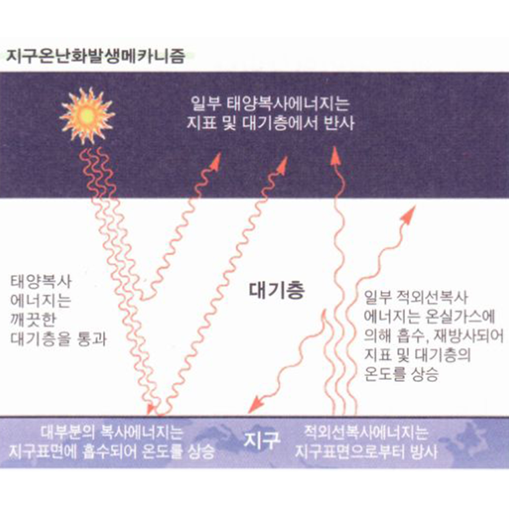

|  |
온실가스
이산화탄소에 의한 지구온난화 모델에 따르면 대류권 온도는 높아지지만
성층권 온도는 오히려 낮아져야 한다. 실제로 성층권 온도를 관측한 결과
성층권 온도는 낮아지는 현상이 발견되었고, 온도 하락의 정도 역시
이산화탄소 모델에서의 예측과 거의 일치했기 때문에 이는 이산화탄소
모델의 중요한 근거 중 하나가 되었다.
온실가스는 빛의 한 종류인 적외선은 막고, 가시광선은 들여보낸다.
문제는 태양 》지구의 에너지는 가시광선이 많고, 지구 》우주의 에너지는
적외선이 많다는 것. 들어오는 에너지양은 그대로인데 나가는
에너지양은 줄어드니 온도는 증가한다.
|